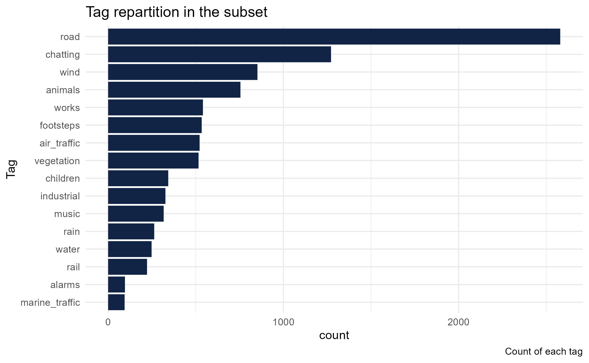

Crowdsourced acoustic open data analysis with FOSS4G tools
Nicolas Roelandt1*, Pierre Aumond2, Ludovic Moisan3
2022-06-29
crowdsourced_acoustic_data_analysis_with_foss4g_2022.RmdAbstract
NoiseCapture is an Android application developed by the Gustave Eiffel University and the French National Centre for Scientific Research as central element of a participatory approach to environmental noise mapping. The application is open-source, and all its data are available freely. This study presents the results of the first exploratory analysis of 3 years of data collection through the lens of sound sources. This analysis is only based on the tags given by the users and not on the sound spectrum of the measurement, which will be studied at a later stage. The first results are encouraging, we were able to observe well known temporal sound source dynamics like road sounds temporal dynamic related to commuting or bird songs in the dataset. We also found correlations between wind and rain tags and their measurements by the the national meteorological service. The context of the study, the Free and Open Source Software tools and techniques used and literate programming benefits are presented.
1 Introduction
NoiseCapture1 is an Android application developed by the Gustave Eiffel University2 and the CNRS3 as part of a participatory approach to environmental noise mapping. The application is open-source and all collected data are available under an Open Database License.
The study presented here is the first exploratory analysis of the first three years of data collection, through the prism of sound sources. The analysis only focused on the tags checked by the users to qualify their environment and not on the sound spectrum of the measurements as it will be analyse in a further time.
The first objective of the study was to control the quality of the tag data provided by the public, either by checking if some known temporal dynamics of sound sources are present in the dataset, or by checking the correspondence between some tags related to the acoustic measurement conditions (presence of rain or wind) with the records from the national meteorological service database.
As these exploratory works will be extended and consolidated thereafter to a more global exploration of the database, and with the will to include this study within the framework of the Open Science, an attention was brought on the reproductibility aspect of the analysis. It was entirely realized with Free and Open Source Software (FOSS) and literate programming techniques.
The context of the study, the implemented methodology and the first results will be presented as well as the benefits of using literate programming in this type of exploratory work.
2 Context
Noise has a major impact on the health and quality of life of humans and wildlife. A study, coordinated by the WHO and published in 2011, indicates that at least one million healthy life years (DALYs) would be lost each year in Western Europe due to traffic noise (Fritschi et al. 2011). Its health, physiological and psychological effects are numerous: hearing damage, sleep disturbances, cardiovascular pathologies, etc. In a more global way, studies show that the perceived noise environment is significantly correlated with an individual’s satisfaction with his or her living environment, with his or her health-related quality of life or with the restorative effect of a place (Botteldooren, Dekoninck, and Gillis 2011). The economic and social impact of noise has also been demonstrated with a social cost of noise in France estimated at 147 billion euros per year (ADEME et al. 2021). A complete and precise environmental noise assessment is therefore of great necessity.
The NoiseCapture app is part of a global Open Science approach (called Noise-Planet) led by Université Gustave Eiffel and CNRS, for the development of tools for the assessment of the sound environment. This project is particularly interested in the implementation of a participative approach for the production of data with smartphones to eventually propose an alternative method of environmental sound mapping. For this purpose, an Android application and a spatial data infrastructure have been specifically developed. The whole system allows to collect physical data (acoustic measurements, GPS positions…) and perceptual data (pleasantness, presence of sound sources), without any territory limit, while respecting the privacy of the contributors. The collected data are freely accessible, in particular by the scientific community which would like to develop new tools for the evaluation and representation of sound environments.
The beginning of this analysis was the release of a 3 years collection of environnemental acoustic samples. A first article presenting this dataset has been published in 2021 (Picaut et al. 2021). It details the structure of the database and the data, the profile of the contributors and the contributions but does not analyze the content of the data. This is what this article proposes to begin.
3 Methodology
As the NoiseCapture application is Open Source and the data collection infrastructure use Free and Open Source Softwares (FOSS), we decided to pursue this by using open source software and data for the analysis part.
First, we will introduce the dataset then we will present the tools we used and why we choose them.
3.1 Data
The data used in this study are contributions made by the user of the application between August 29, 2017 and August 28, 2020. During this period, nearly 70,000 unique contributors allowed the collection of more than 260,000 tracks for a total of about 60 million seconds of measurement. A track (or trace) is a collected recording, it contains the record of the sound spectrum (1 second, third octave) recorded by the phone microphone coupled with its GPS positioning (1 second). Each track is timestamped too.
The 3 years collection dataset is available with an Open Database License through the Gustave Eiffel university Dataverse4.
This information can be enriched by the contributor with labels. There are 18 predefined labels and the user can select one or more of them for each of the traces made. The labels are detailed in (Picaut et al. 2021). The preliminary work presented here focuses on the analysis of the proportion of certain labels in the global sample at certain temporalities.
In addition to data from the collaborative collection, some additional data were used to limit the study area. First we chose to limit the geographical scope of this preliminary study to metropolitan France because this area contains the largest number of recordings and having a single administrative area facilitates the collection of supplementary databases. Then we extended some analysis worldwide. The results presented here concern tracks recorded in the France metropolitan area.
To facilitate the reproductibility of spatial filtering, it was decided to use open data sets from recognized sources: the Natural Earth database (Patterson and Kelso 2021) and the Admin Express database from the French National Institute of Geographic and Forest Information (Institut Géographique National 2021).
The raw data has been stored and pre-filtered in a geospatial database and has been analysed using a statistical analysis language.
3.2 Tools
In order to be as open as possible and to work in the most collaborative way, we decided on a FOSS toolset: PostgreSQL/Postgis to store the data and the R language to analyse and produce knowledge from it. We also used Git for source code versioning and to facilitate remote collaboration.
The data are provided as a dump from a PostgreSQL/PostGIS database (Ramsey and Blasby 2001). In order to access the data, we had to set up a PostgreSQL server and configure it according to the indications provided with the dataset. Several views have been set up to pre-filter the data and provide stable access points for the R language.
the R language (R Core Team 2021) is a programming language for data processing and statistics with many libraries dedicated to geospatial data. R allowed us to query the database to get data, refine it to our needs, then produce data analysis, graphs and reports using Rmarkdown files.
Rmarkdown, an R package, allows to mix code in several programming languages and text in markdown for the dynamic production of graphs, tables and documents. The use of Rmarkdown is one of the recommended means for literate programming (along with Jupyter Notebooks and Emacs Org-Mode (Desquilbet et al. 2019)) So it is a useful tool to either communicate progress inside our team and publish our results.
Rmarkdown, as any markdown file, is a plain text file that can be easily versioned with any version control system. As our team is scattered in several places in France, we needed a tool to facilitate code sources communication, for this purpose, we used git.
Git is a Distributed Version Control System (DVCS) (Chacon and Straub 2014). It enables collaborative and decentralized work. Using the Github online plateforme, we could communicate source code changes to each other in a desynchronized way between different collaborators present on several sites (Nantes, Lyon, Paris).
3.3 Pre-processing
The raw data are provided in the form of a PostgreSQL/PostGIS dump. A server has been set up to store the data. Several SQL scripts create materialized views that perform much of the attribute and spatial filtering and provide stable access to data corresponding to defined criteria. A materialized view is a good compromise between a table and a view because it has similar response time to a table and also allows us to recompute values easily if threshold values changed. It is perfect to store data that does not change too often. Those views are the entry point for the R language to get data to analyse.
The analyses were carried out in two stages: a first exploratory analysis and more deeper one. The first analysis aimed at verifying whether certain known environmental dynamics could be visible in the data set. This first analysis brought encouraging results, we took it again in order to refine it and to extend the field of research. In order to have a better qualification of the quality of the dataset, we look if there is a relationship between the weather events in the environment and the tags filled by the user. More precisely, the indicator chosen is the ratio of users who have put a particular tag among the users who have put at least one tag in a particular condition (i.e. no wind vs. wind).
The code producing the analysis and graphics are separated in several complementary documents5.
The selection criteria for the data we were going to use for our analyses were both attributive and spatial. We removed from all the analysis the tracks tagged test or indoor as we wanted only outdoor measurements. While these two analyses share a common basis, the selection criteria were refined between both.
Short tracks (duration less than 5 seconds) were discarded in both analysis.
Long tracks (duration longer than 15 minutes) have been removed from the exploratory analysis. They were kept in the second analysis.
In the exploratory analysis, we kept the tracks where the GPS median accuracy of the whole track was less than 20 meters.
In the extended analysis, we implemented an algorithm to detect and remove outliers track points using a method from the R package CoordinateCleaner6.
This method was used to keep tracks that would have been eliminated because some of their points had aberrant coordinates, which allowed us to work with larger samples and with a better localization accuracy.
In the first analysis, we decided to keep tracks that are comprised in a rather small area, the bounding box area of the track would have to be equivalent to a square of 25 by 25 meters. This criterion was not considered in the extended analysis, but a threshold of 8 m/s (equivalent to 30 km/h) was set between 2 GPS measurements to eliminate tracks with aberrant distance between two measurements points.
Although the extended analysis examined some questions on the global dataset, the results presented here are for tracks in metropolitan France. To extract data regarding France metropolitan area, we pre-filtered the data using the NaturalEarth dataset to keep tracks that are within the France country. This spatial filtering was implemented by creating a materialized view within the PostGIS database.
NaturalEarth is a great dataset and is well known worldwide however it does not distinguish France metropolitan area from overseas areas. This could have introduce complications with timezone handling. We refined the spatial filtering to France’s metropolitan area using an authoritative dataset (Institut Géographique National 2021).
In order to facilitate the replication of the study on areas without this kind of issues, this as not been done within the database but at the beginning of the Rmarkdown document where the exploratory analysis is conducted. The Rmarkdown document establishes the connection with the materialized view containing the data from the PostgreSQL server and then performs the operations allowing to finalize data preparation and analyze the data.
The data is analyzed using several Rmarkdown files that can be launched independently or not. Some files prepare additional data or calculate indicators. Others analyze the results.
4 Results
4.1 Environmental acoustics results
The main goal of this preliminary study was to control the quality of the tags defined by the users in a crowdsourced acoustic data and if thoses tags are sufficient to describe the user environment.
The results presented here concerns tracks bearing a tag, recorded in metropolitan France between 2017 and 2020. It focuses on the proportion of a certain tag in relation to all the tags for a given period (time of day, season, etc.). In the sample studied, it is possible to note a large prevalence of the road tag as shown in Figure 1. chatting, animals and wind tags are also well represented.

Figure 1. Tag representation in mainland France.
Noise annoyance from road traffic and its effects on health are a major concern in France and are the subject of several studies ( Méline et al. (2013), Grange, Chatignoux, and Grémy (2009)).
In order to have a first idea of the quality of the tags in the dataset, we tried to see if known temporal dynamics in environmental acoustics appeared in the data.
Subsequently, we seek to determine for physical phenomena such as rain and wind if the presence of tags related to them in the dataset corresponded to real measurements of rain and wind of the national weather service.
4.1.1 Known environmental acoustics temporal dynamics :
A first axis of analysis concerns the time distribution of certains tags.
The first tag we studied was the animals tag.
We wanted to see if we were able to see a rise of this tag presence in the dataset
close to the sunrise.
Indeed as shown by Robbins (1981), bird song activity is highest in the
morning, especially in the hour after sunrise.
Figure 2 shows that the tag animals
(associated to bird songs) is more frequent in the morning and especially at sunrise time.

Figure 2. Animals acoustic dynamics.
The second tag we studied was the road one.
We also observed peaks in human activity, especially the commuting morning and evening peak times.
Figure 3 shows peak times ate 9:00 AM–10:00 AM
and 8:00 PM–9:00 PM.
On a previous study on commuting patterns from smart card data in Beijing (China),
Ma et al. (2017) found peak times at 7:00 AM–9:00 AM and 5:00 PM–7:00 PM.
This time lag might be due to several reasons that we did not explore: cultural
difference between China and France, different mobility practices (smart card
for public transportation data versus road noise data), different types of study area
(Beijing metropolis and metropolitan France).

Figure 3. Road acoustics dynamics.
Seeing those dynamics was a good sign regarding the validity of crowdsourced environmental acoustic data. However, we wanted more precise quality indicators so we looked if we were able to correlate the mention of physical events in the dataset and records of thoses events in an authoritative database.
4.1.2 Correlation between tags and physical events in the user environment :
In order to determine the accuracy of the manually selected tags by the users of the NoiseCapture app, we wanted to proceed simple investigations concerning some tags related to physical events, such as the weather related ones (rain,wind), which can be verified later on.
As we know the user position and we have the timestamp of the recording, we are able to determine the weather conditions at that time and place using the services of Météo-France, the French national meteorological service.
The weather data used is from France’s national weather organisation Météo-France, available along with its full documentation from their website : French weather data
The meteorological data collected are from the nearest meteorological stations. The median distance between weather stations and our tracks is 16.1 kilometers.

Figure 4. rain tag use.

Figure 5. wind tag use.
The proportion of wind and rain tags seem to correlate with their corresponding physical events.
In order to create those graphs, we selected scales to group the data
(wind force and precipitation) and compute the proportion of tags present in those groups.
There is a strong correlation between the proportion of wind tags and the strength of wind, r(7) = .93, p < 0.01.
The correlation between the proportion of rain tags and the amount of rain is less significative, r(6) = 0.68, p < 0.1.
This might be a perceptual bias from the participant or because of too small groups.
The Figure 4 shows that there is very few rain
tags when the weather services does not record rain.
The dataset we have studied is not sufficient to characterize the
amount of rainfall but sufficient to qualify the presence or absence of it.
4.2 Benefits of OpenScience and literate programming
Intrinsically, Free and Open Source Software (FOSS) brings many benefits to any project, whether it is a scientific one or not. The problem of licenses is greatly facilitated because they are usable by all, without discrimination and without additional cost. The question of having to acquire licenses and how to do so is no longer an issue. Another advantage, as long as one has the necessary skills, is the possibility to adapt the tool to one’s needs, an important quality in an often innovative field. Free and Open Source Software favors interoperability and this aspect is important when creating complex processing chains, implementing several different tools.
As shown in Section 3.2, this study use a rather small toolset of FOSS. The reduction of the number of tools needed for the scientific production was possible thanks to the use of a programming language allowing to cover practically all the aspects of the project, whether it is the connection to the database, the statistical analyses, the production of tables and graphs as well as reports or scientific papers. A reduced toolbox also promotes reproductibility by limiting the constraints of installing software on a machine. Nevertheless, the analysis uses a large list of R packages and some of them may have dependencies that can cause reproductibility issues.
While free software facilitates the implementation and deployment of tools, literate programming is more oriented to communication between humans. Thus, as early as 1984, Donald Knuth, who invented the concept, questions the relationship between the developer of a program and the source code he produces. He proposes that, beyond the simple transmission of instructions to a computer, the source code should be a means of communicating the intentions of the developer to another human being (Knuth 1984).
As Schulte et al. (2012) explains, literate programming mixes source code and natural language, divided into blocks of instructions for the computer and blocks of text for human understanding. The code blocks are useful for scientific production because they participate in data processing and information extraction, while the text blocks are intended to explain both the methods and the results for the benefit of the human reader.
In the context of scientific research, the benefits brought by free software and literate programming are valid at several levels: for oneself, for the team/laboratory, for the scientific community.
For oneself, the advantages are numerous, they allow to serenely resume work on a subject even after a break of several months if the code is sufficiently documented. Literate programming allows one to go further than just commenting on the code because the information can be organized, prioritized and developed. The commentary of a figure is as close as possible to the figure and the code that produced it. By restarting the analysis, it is possible to see if all the conditions are met to resume the work: is the necessary software present? Is the data accessible? Does the code still work after updates?
For the team or the laboratory in which the project takes place, the benefits are also numerous. The work done is accessible and readable, especially if collaborative tools have been put in place. Within the framework of the analysis presented here, an initial exploratory analysis revealed certain known dynamics in environmental acoustics. This motivated the recruitment of a new team member to carry out a more thorough analysis. The problem of setting up the database did not arise again because the server used for the exploratory analysis was still functional. Nevertheless, the other technical aspects of the analysis (creation of SQL views, connection and interrogation of the database with R, etc.) would have been more difficult to master if they were not already illustrated in a detailed document.
It is at this point that literate programming comes into its own, since more than a series of instructions, the reader is also provided with the methodology and the analysis of the results produced. This represents a considerable time saving at the beginning of the project. The techniques of literate programming aim to promote communication between humans and with the use of a decentralized versioning tool, to work independently while being able to easily share the progress of its work. The working environment used for this work has allowed to accelerate the publication since only 6 months separate the beginning of the work and the submitted version of this article.
For the scientific community, the COVID-19 health crisis has shown that public confidence in the scientific community is fragile. Especially in times of doubt, when the information provided by studies can be contradictory. The production of knowledge in open mode, where everything is described and auditable, can help not only the scientific community to validate the soundness of the work and the results presented, but also the general public to appropriate them.
For a researcher working on similar questions, a research project where the data, methods, code and even the scientific literature produced are open and documented, makes it much easier to revisit the work in order to answer one’s own questions because it provides a complete example and not just final results.
While being a valuable aid for reproductibility, the FOSS and literate programming with notebook tools such as Rmarkdown used in this project suffer from some limitations. It is possible to redo the calculations by trying to to reproduce the software environment (the versions of the software and packages used are provided), but there is no guarantee that the result will be exactly the same because the computer environment (is difficult to replicate.
The package R renv can help to reproduce an R environment by providing functions for saving and restoring dependencies at the project level. In some cases, if this is not enough, it will be necessary to turn to lower-level solutions such as Docker and Guix.
5 Conclusion
The major objective of this study was to control the quality of the tag data in an environmental acoustics crowdsourced dataset. The first step was to find if known temporal dynamics of sound sources are present in the dataset The first results were encouraging because sound dynamics related to commuting or animal activity can be observed.
In a second time, we checked the correspondence between tags related to the acoustic measurement conditions (presence of rain or wind) with the records from the national meteorological service database. It works very well with the wind with a strong positive correlation. We believe that this works with rain but that either the sample size is too small or the perception of light rain is not sufficient for the user to think about adding the corresponding tag. As a result, the correlation between actual rainfall observations and the presence of rain tags in the database is weaker and less significant than for wind.
This study shows that it is possible to observe known dynamics in environmental acoustics inthe crowdsourced NoiseCapture dataset (road dynamics related to commuting or animal activity). It also increases the level of confidence brought to this dataset by the fact that the measurement conditions indicated by the user seem to correspond to real measurement conditions (rain and wind). Some questions still need to be explored, notably those concerning the representativeness and the unbalanced nature of the samples, which are sometimes weak for certain periods.
We also wanted to show that Free and Open Source Software can be used to produce scientific knowledge all along the production chain, from data collection, storage, analysis and even presentation. By mobilizing only a few tools, it is quite possible to produce scientific knowledge in a more reproducible way.
The systematic use of open source software, the provision of documented code files and a document mixing narrative, figures and code has greatly facilitated the recovery and continuation of the work presented here. And this within our own research team.
We are aware that the acquisition of the necessary skills to mobilize these tools is not easy and need time but we believe that the gain is much higher than the cost. Reproductibility is an important constraint for research projects that often have limited means, nevertheless it is an investment in the future, both for the team and for the scientific community interested in the work. For the more technical parts, such as the implementation of database servers and help with the reproductibility issues, the presence of research software engineers in a team or a lab is a real plus.
ACKNOWLEDGEMENTS
The authors would like to thank the I-SITE FUTURE for the founding of this exploratory project. We would like to thank the FOSS community for providing us all those tools to work with.
pre-print version